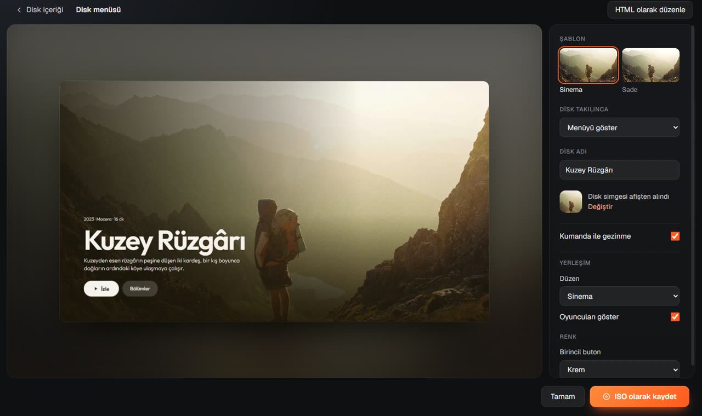
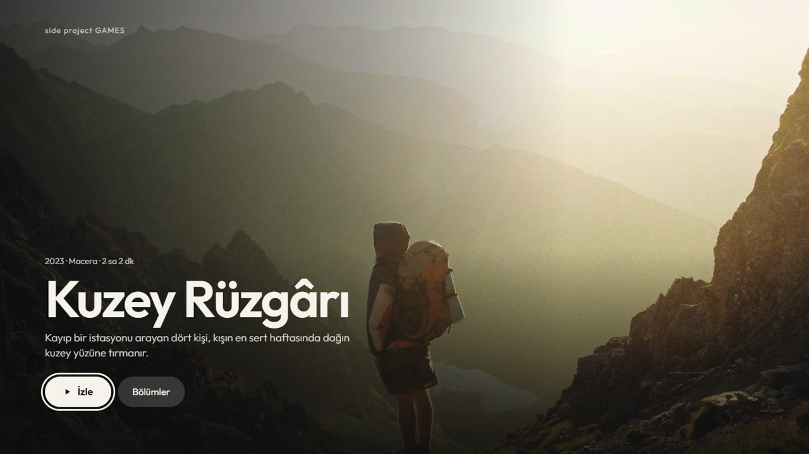
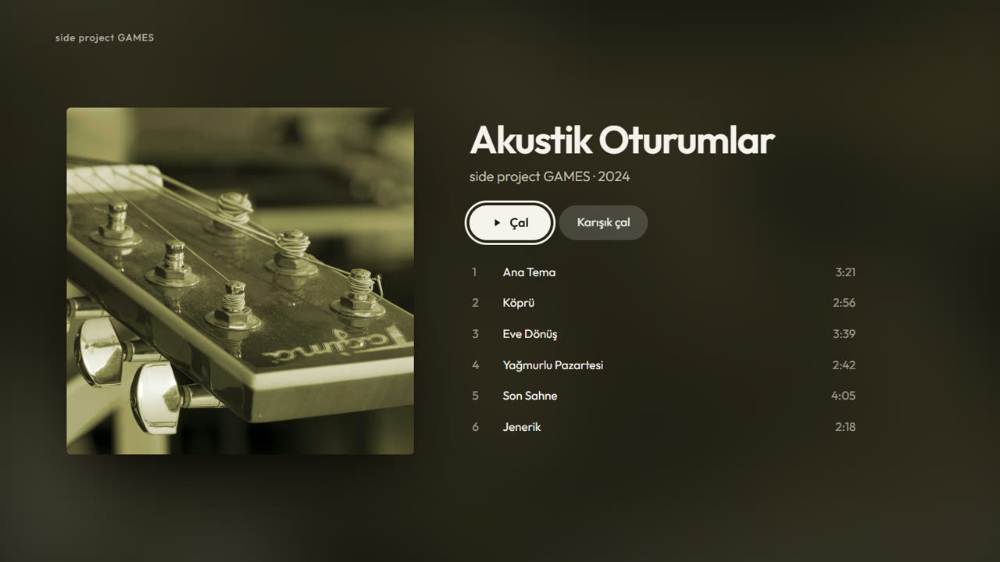
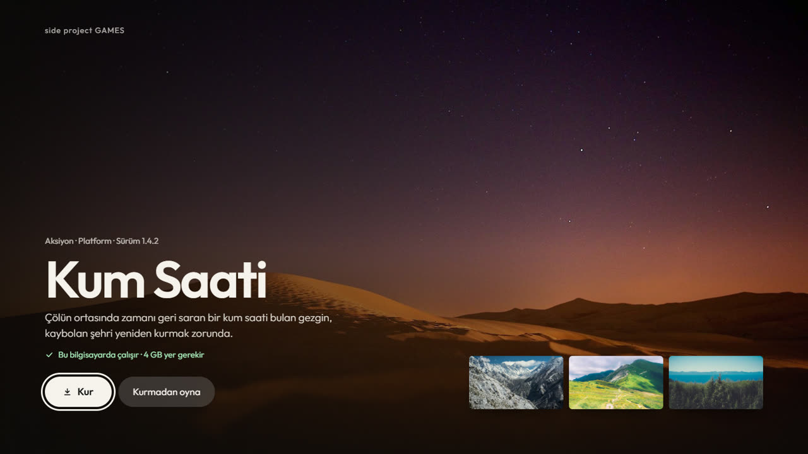
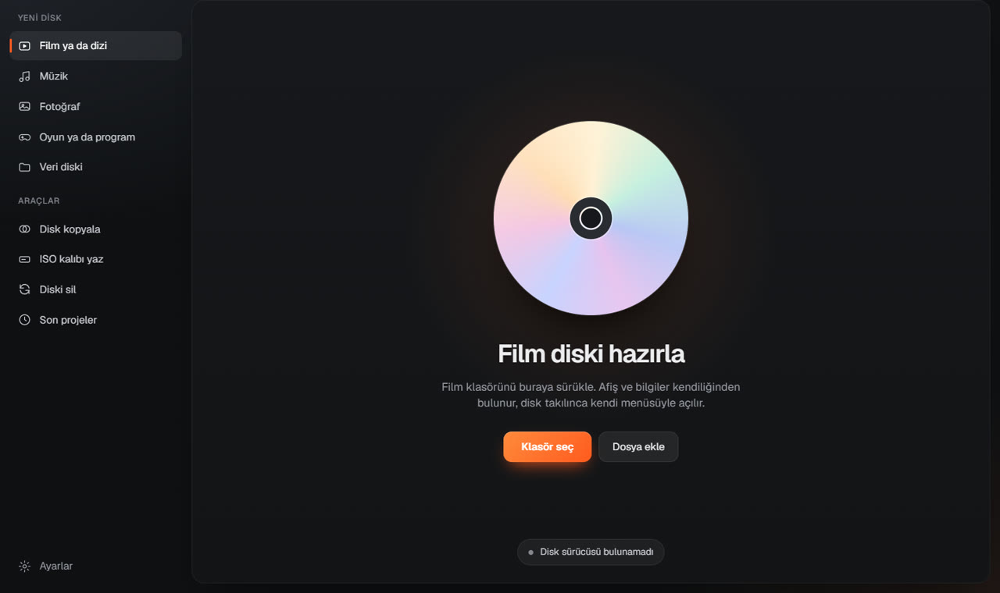
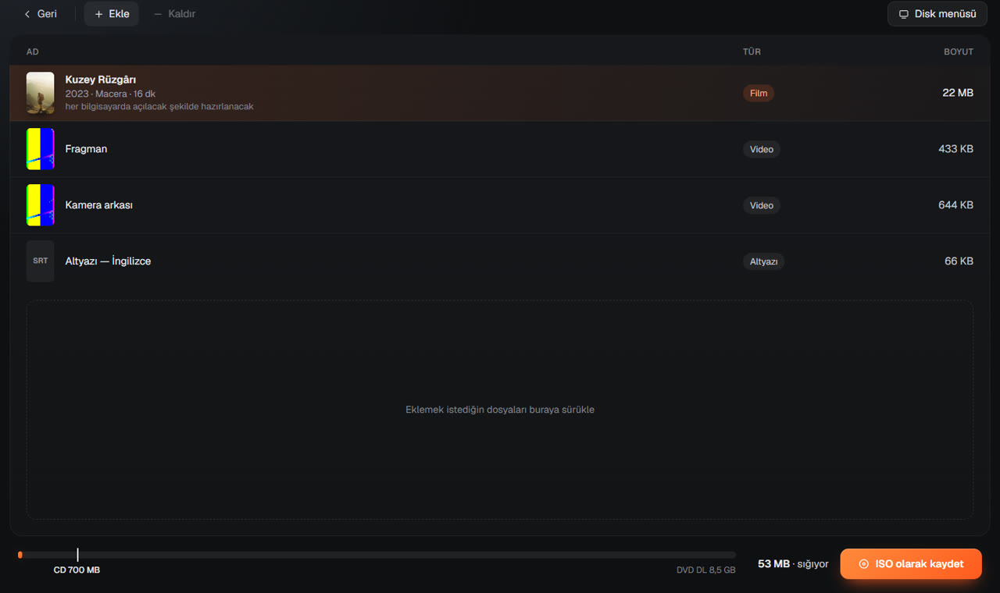
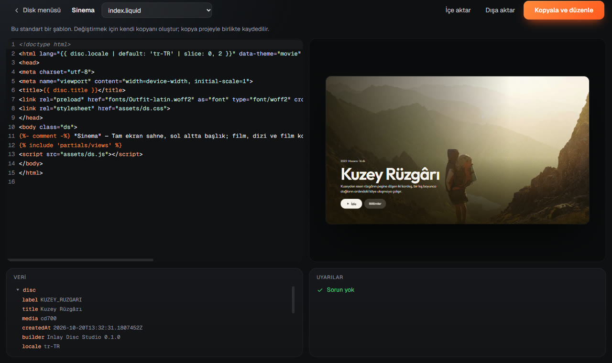

Klasörünü, takılınca kendi menüsüyle açılan bir diske dönüştür.
Film, dizi, albüm, fotoğraf, oyun ya da program… Inlay afişleri ve bilgileri bulur, dosyaları her bilgisayarda açılacak hale getirir, sinema salonu gibi bir menü hazırlar ve diske yazar. Diski takan kişi tek tuşla izler, dinler ya da kurar.

Diski takan kişi bunu görür
Gerçek afiş ve fotoğraflar tam ekran gelir; arayüz neredeyse görünmez. Ok tuşları, kumanda ya da fareyle gezilir.



Hazırlaması dört adım
-

Klasörü bırak
Ne olduğunu Inlay kendisi anlar: film, dizi, albüm, galeri ya da program.
-

İçeriğe göz at
Afiş ve bilgiler bulunur. Diske sığmazsa ne yapacağını Inlay söyler: "DVD DL kullan", "Fragmanı çıkar".
-
Menüyü seç
Canlı önizleme, diske giden menünün kendisidir. Şablon, renkler, disk adı ve simgesi.
-

Diske yaz
Yazdıktan sonra her dosya geri okunup kontrol edilir. İstersen menüyü HTML ile baştan tasarla.
Neler yapar?
- Her dosya oynasınGerekirse videoyu her bilgisayarda açılacak biçime getirir; olmuyorsa diske küçük bir oynatıcı ekler (HEVC, DTS, MKV…).
- Afiş ve bilgiler
.nfodosyaları, TMDB, IGDB, Steam ve SteamGridDB'den; bulunamazsa sen yazarsın. - Oyun ve program diskleriKurulum, sessiz ön gereksinimler, "8 GB bellek önerilir" gibi uyarılar, birden çok programı seçerek kurma.
- Disk menüsü internete çıkmazMenü yalnızca diskteki dosyaları açar; Inlay hiçbir kullanım verisi göndermez.
- Kontrol edilmiş yazmaSHA-256 doğrulama, okuma hızı grafiği, CD / DVD / DVD DL, uyku engelleme.
- AraçlarISO olarak kaydet, ISO kalıbı yaz, yeniden yazılabilir diski sil, veri diskini kopyala.
- Kumanda ve oyun koluTV'ye bağlı bilgisayarda kanepeden gezilebilen menüler.
- WebView2 yoksa bileDisk tarayıcıda açılan sade bir menüyle (
Menu.html) yine kullanılabilir.
Nasıl denerim?
- İndir. InlaySetup.exe (yaklaşık 200 MB).
- Çalıştır. Kurulum dosyası henüz imzalı olmadığı için Windows SmartScreen "Windows bilgisayarınızı korudu" diyebilir: Ek bilgi › Yine de çalıştır. Kurulum yönetici izni istemez, programı kendi kullanıcı klasörüne kurar.
- Bir klasör bırak. Elindeki bir film, albüm ya da fotoğraf klasörünü Inlay'in penceresine sürükle.
- Disk yazıcın yoksa sorun değil. ISO olarak kaydet de; oluşan
.isodosyasına çift tıkla. Windows onu sanal bir disk gibi açar, içindekiBaslat.exemenüyü gösterir. Gerçek bir diske yazmak için boş bir CD/DVD tak ve Diske yaz'a bas. - Kaldırmak istersen: Ayarlar › Uygulamalar › Inlay Disc Studio › Kaldır.
Ayrıntılı rehber: Kullanım rehberi · Geliştiriciler için: README (kaynaktan derleme, testler, paketleme).
Sorular
Disk takınca neden kendiliğinden açılmıyor?
Windows 10 ve 11, güvenlik nedeniyle CD ve DVD'lerde programları kendiliğinden başlatmaz. Disk takılınca çıkan bildirime tıklayınca "Filmi izle" ya da "Menüyü aç" seçeneği görünür; disk Gezgin'den çift tıklanarak da açılır.
SmartScreen neden uyarıyor?
Kurulum dosyası ve disklere giden Baslat.exe henüz bir kod imzalama sertifikasıyla imzalı değil. Windows
tanımadığı her yeni programda bu uyarıyı gösterir. Sertifika eklendiğinde uyarı kalkar.
Hangi dosyaları destekliyor?
Videoda MP4, MKV, AVI, MOV ve daha fazlası (H.264, HEVC, AV1, AC3, DTS…), müzikte MP3, FLAC, AAC, ALAC, Opus, WAV, fotoğrafta JPEG, PNG, HEIC, RAW, TIFF; altyazıda SRT, ASS, VTT ve görüntü altyazıları. Programlarda kurulum dosyaları (EXE, MSI) ve kurulum gerektirmeyen programlar.
Verilerim bir yere gönderiliyor mu?
Hayır. Inlay yalnızca afiş ve bilgi aramak için, anahtarını girdiğin servislere (TMDB, IGDB, Steam, SteamGridDB) bağlanır. Anahtarlar bilgisayarında şifreli saklanır. Diskteki menü hiçbir ağ isteği yapamaz.
Müzik CD'si (CD-DA) ya da DVD-Video yazabiliyor mu?
Hayır. Inlay her bilgisayarda açılan veri diskleri hazırlar. Müzik diskleri de veri diski olarak yazılır ve kendi menüsüyle çalınır.